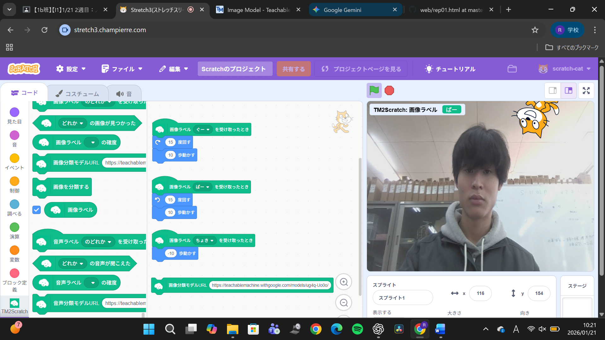
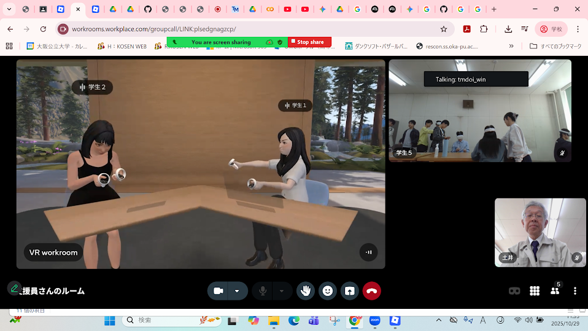
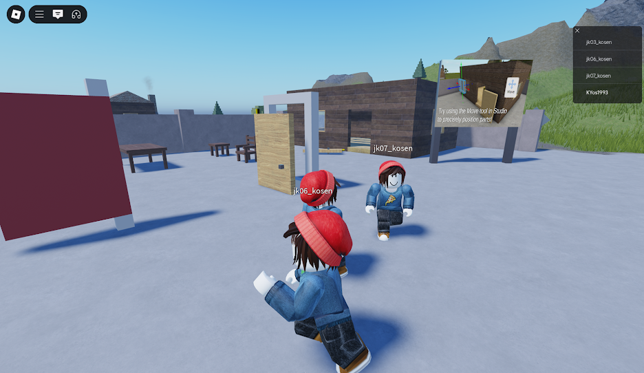

第2週目
2-1 2週目のレポートをHTMLで作る
1.内容
配布していただいたHTMLを開き、rep02.htmlの本文だけ書き換えました。jpg画像をアップロードして表示の確認を行いました。
2.感想
第1回の授業後友達に教える機会があり、本文を編集するときも画像をアップロードするときも前回よりも自信をもって操作することができました。
2-2 機械学習体験

1.内容
用意した画像データを3種類に分けて登録し学習を実行しました。Scratchに読み込んで識別結果ごとにスプライトの動きを変える処理を設定しました。
2.感想
背景や撮影条件の違いにより、同じ手の形でも識別結果が不安定になっており画像での識別は膨大なデータが必要なんだなと感じました。
2-3 VR（バーチャルリアリティー：Virtual Reality）の体験


1.内容
VR上に通っている高専の校舎が表示され、実際の配置に基づいた廊下や教室の構造が再現されていました。視点の移動に応じて空間が変化しました。
2.感想
少しVR酔いで頭が重くなったが、視界いっぱいに広がる空間の迫力は、酔っていてもやめられないほど面白い体験でした。